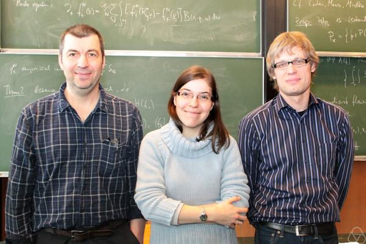

When designing an optimization problem over measures, a familiar difficulty is that the natural quantity is a ratio. A divergence compares one density to another. A transport model divides momentum by mass to recover velocity. Ratios look nonlinear, but the right combination of a ratio and a weight has a remarkably simple convex structure.
The construction is the perspective transform:
\[ P_f(z,r)=r\,f(z/r),\qquad r>0. \]Read \(r\) as an amount of mass, \(z/r\) as a quantity per unit mass, and \(f\) as its cost. Multiplying by \(r\) returns a total cost. Convexity of \(f\) then becomes joint convexity in \((z,r)\). This elementary fact explains why both Csiszár divergences and the Benamou–Brenier formulation of optimal transport lead to convex optimization problems. It also tells us how to define these costs for atoms and at zero density.
We will prove this once, then use it in information geometry, transport, and transport with mass creation. Standard references for the convex construction are Boyd and Vandenberghe [1] and Combettes [2].
Mix masses before mixing their ratios
Let \(f:\mathbb R^k\to[0,+\infty]\) be a proper, lower-semicontinuous convex function: it is finite somewhere, and its epigraph is closed. The value \(+\infty\) can encode a constraint. For now take positive masses \(r_0,r_1\) and finite costs.
Theorem 1 (perspective convexity). The perspective \(P_f\) is jointly convex for \(r>0\). It is also positively one-homogeneous:
\[ P_f(tz,tr)=tP_f(z,r),\qquad t>0. \]Proof: Jensen with mass-weighted coefficients
For \(0<\theta<1\), set
\[ r_\theta=(1-\theta)r_0+\theta r_1, \qquad z_\theta=(1-\theta)z_0+\theta z_1. \]The ratio of the mixtures is a mixture of the ratios, with weights proportional to their masses:
\[ \frac{z_\theta}{r_\theta} =\frac{(1-\theta)r_0}{r_\theta}\frac{z_0}{r_0} +\frac{\theta r_1}{r_\theta}\frac{z_1}{r_1}. \]These two coefficients sum to one. Apply convexity of \(f\), then multiply by \(r_\theta\):
\[ P_f(z_\theta,r_\theta) \le(1-\theta)P_f(z_0,r_0)+\theta P_f(z_1,r_1). \]Homogeneity follows directly from the definition. \(\square\)
This is the whole mechanism. Mixing two populations means averaging their per-unit quantities according to mass. The same ratio \(z/r\) is unchanged when both quantities are scaled, while the total cost scales linearly.
What should happen at zero mass?
Dividing by zero is not a definition. The correct extension is determined by the growth of \(f\) at infinity. Its recession function is
\[ f^\infty(z)=\lim_{t\to\infty} \frac{f(u_0+tz)-f(u_0)}{t}, \qquad u_0\in\operatorname{dom}f. \]The limit exists in \([0,+\infty]\) and is independent of the chosen base point \(u_0\). The closed perspective is
\[ P_f(z,r)= \begin{cases} r f(z/r),&r>0,\\ f^\infty(z),&r=0,\\ +\infty,&r<0. \end{cases} \]It remains convex and is lower semicontinuous [2]. In particular \(P_f(0,0)=0\). For the quadratic cost \(f(u)=\lVert u\rVert^2/2\), the recession cost is infinite in every nonzero direction, so
\[ P_f(z,r)=\frac{\lVert z\rVert^2}{2r}\quad(r>0), \qquad P_f(z,0)= \begin{cases}0,&z=0,\\+\infty,&z\ne0.\end{cases} \]For a linearly growing function, a nonzero numerator at zero denominator can instead have a finite cost. Thus the boundary convention is part of the model.
Why this extension is convex and closed: a dual proof
Define the convex conjugate \(f^*(a)=\sup_u\{a\cdot u-f(u)\}\). The identity \(f=f^{**}\) gives, for \(r>0\),
\[ P_f(z,r)=\sup_{a\in\operatorname{dom}f^*} \{a\cdot z-rf^*(a)\}. \]At \(r=0\), the same expression is the support function of \(\operatorname{dom}f^*\), which equals \(f^\infty\). Consequently the formula holds for every \(r\ge0\). It is a supremum of continuous linear functions on that half-space, so the extension by \(+\infty\) to \(r<0\) is convex and lower semicontinuous.
Lemma: the recession function is that support function
Fenchel's inequality gives, for every \(a\in\operatorname{dom}f^*\),
\[ f(u_0+tz)\ge a\cdot(u_0+tz)-f^*(a). \]Divide by \(t\) and let \(t\) grow to get \(f^\infty(z)\ge a\cdot z\). Conversely, if \(S=\sup_a a\cdot z\) is finite, biconjugacy gives
\[ f(u_0+tz) \le\sup_a\{a\cdot u_0-f^*(a)\}+tS =f(u_0)+tS. \]Hence \(f^\infty(z)\le S\). If \(S=+\infty\), the first inequality already forces equality. \(\square\)
The extension is also the lower-semicontinuous closure of the positive-mass formula: \((z+ru_0,r)\to(z,0)\) has cost tending to \(f^\infty(z)\). This explains why the recession value is forced, rather than an arbitrary choice at vacuum.
From a pointwise cost to a functional on measures
Let \(X\) be a measurable space, \(\rho\) a finite nonnegative measure, and \(m\) a finite \(\mathbb R^k\)-valued measure. Choose any finite positive measure \(\lambda\) dominating both, for instance \(\lambda=\rho+|m|\), where \(|m|\) is the total variation measure. Define
\[ \mathcal A_f(\rho,m) =\int_X P_f\!\left( \frac{dm}{d\lambda},\frac{d\rho}{d\lambda} \right)d\lambda. \]The Radon–Nikodym derivatives are densities with respect to this common reference. Nothing here requires densities with respect to Lebesgue measure.
Theorem 2 (a convex functional of measures). The value of \(\mathcal A_f\) is independent of \(\lambda\), and \(\mathcal A_f\) is jointly convex in \((\rho,m)\).
Proof: the reference density cancels
Compare two dominating measures \(\lambda_0,\lambda_1\) through \(\nu=\lambda_0+\lambda_1\). Write \(h=d\lambda_0/d\nu\). The chain rule for densities and one-homogeneity give
\[ P_f\!\left(\frac{dm}{d\nu},\frac{d\rho}{d\nu}\right) =h\,P_f\!\left(\frac{dm}{d\lambda_0}, \frac{d\rho}{d\lambda_0}\right) \quad\nu\text{-a.e.} \]On \(\{h=0\}\), both measures vanish and the left side is \(P_f(0,0)=0\); the right side is interpreted as zero. Integrating proves equality of the values using \(\nu\) and \(\lambda_0\), and likewise for \(\lambda_1\).
For convexity, choose one reference measure dominating the two pairs being mixed. Their densities mix linearly. Apply Theorem 1, including its boundary extension, pointwise and integrate. \(\square\)
This is why one-homogeneity is so useful on measures: changing the reference measure changes all the densities by the same local factor, which cancels in the integral. Convexity here refers to ordinary linear mixtures of measures.
First example: Csiszár divergences
Take a lower-semicontinuous convex function \(\phi:[0,\infty)\to[0,+\infty]\) with \(\phi(1)=0\), and extend it by \(+\infty\) on negative numbers. For two finite nonnegative measures \(\alpha,\beta\), set
\[ D_\phi(\alpha\mid\beta) =\int_X P_\phi\!\left( \frac{d\alpha}{d\lambda},\frac{d\beta}{d\lambda} \right)d\lambda. \]If \(\alpha=p\lambda\) and \(\beta=q\lambda\) with \(q>0\), the integrand is the familiar \(q\phi(p/q)\). These are the Csiszár \(f\)-divergences, also associated with the early work of Ali and Silvey [3], [4]. We use the letter \(\phi\) to distinguish the scalar generator from the divergence functional.
Common choices illustrate how much geometry fits inside the same construction:
| Generator \(\phi(u)\) | Perspective at \(q>0\) | Divergence |
|---|---|---|
| \(u\log u-u+1\) | \(p\log(p/q)-p+q\) | Generalized KL |
| \((\sqrt u-1)^2\) | \((\sqrt p-\sqrt q)^2\) | Squared Hellinger |
| \(|u-1|\) | \(|p-q|\) | Total variation norm |
Here \(0\log0=0\). On probability measures the linear KL terms integrate to zero. For measures of different masses, keep them: the resulting cost is nonnegative and vanishes at equal measures. The total variation row uses the full norm \(\int|p-q|\,d\lambda\), twice the usual total variation distance between probabilities.
Theorem 2 immediately gives joint convexity of \(D_\phi\). It also supplies the correct singular part. Writing the Lebesgue decomposition \(\alpha=h\beta+\alpha^\perp\),
\[ D_\phi(\alpha\mid\beta) =\int_X\phi(h)\,d\beta +\phi'_\infty\,\alpha^\perp(X), \] \[ \phi'_\infty=\lim_{u\to\infty}\frac{\phi(u)}u. \]Use \(0\cdot\infty=0\) when the singular mass vanishes. For KL, \(\phi'_\infty=+\infty\), so finite cost requires \(\alpha\ll\beta\). For Hellinger, \(\phi'_\infty=1\), so mass where \(\beta\) is absent has a finite linear cost. In particular, \(D_\phi(a\delta_x\mid b\delta_x)=b\phi(a/b)\) for \(b>0\), and its value at \(b=0\) is \(a\phi'_\infty\).
Why the singular correction has exactly this form
On the part dominated by \(\beta\), choose \(\beta\) as reference to obtain \(P_\phi(h,1)=\phi(h)\). On the singular part, choose \(\alpha^\perp\) as reference: the two densities are \((1,0)\), with cost \(P_\phi(1,0)=\phi^\infty(1)=\phi'_\infty\). The independence from the reference measure lets us combine these two calculations. \(\square\)
A short consequence: coarse-graining reduces divergence
Suppose \(p_i,q_i\) are masses on a finite alphabet, and we merge indices into bins \(B\). Let \(p_B=\sum_{i\in B}p_i\) and similarly for \(q_B\).
Proposition 1 (deterministic data processing). Merging bins cannot increase the divergence:
\[ \sum_B P_\phi(p_B,q_B) \le\sum_i P_\phi(p_i,q_i). \]Proof: convexity plus homogeneity is subadditivity
For any two pairs \(u,v\), these two properties give
\[ P_\phi(u+v) =2P_\phi((u+v)/2) \le P_\phi(u)+P_\phi(v). \]Apply this repeatedly within each bin and sum. The proof includes zero masses and infinite costs without dividing by them. \(\square\)
Thus a basic information-theoretic inequality follows from the same geometry that makes the divergence convex. A stochastic coarse-graining works similarly: split each pair with the transition probabilities, use homogeneity, then merge.
Soft marginal constraints in unbalanced transport
Classical transport imposes the two marginals of a nonnegative plan \(\pi\) exactly. If the input masses differ, there is no feasible plan. A common unbalanced model replaces these constraints by penalties [5], [6]:
\[ \inf_{\pi\ge0}\left\{ \int_{X\times X}c(x,y)\,d\pi(x,y) +\tau_0D_\phi(\pi_0\mid\alpha) +\tau_1D_\phi(\pi_1\mid\beta) \right\}. \]Here \(\pi_0,\pi_1\) are the marginals, \(c\ge0\) is a transport cost, and \(\tau_0,\tau_1>0\) control marginal fidelity. Marginalization is linear. The transport term is linear, and the divergence terms are convex. The whole problem is therefore convex in \(\pi\). Joint convexity is useful when the reference measures are also optimized, for example in a reconstruction or barycenter problem with convex additional constraints.
Second example: the Benamou–Brenier action

Jean-David Benamou, on the left
Yann Brenier
A fluid with density \(r(t,x)\) and velocity \(v(t,x)\) has kinetic action
\[ \int_0^1\!\int_{\mathbb R^d} \tfrac12\lVert v\rVert^2 r\,dx\,dt. \]It conserves mass through \(\partial_t r+\nabla\cdot(rv)=0\). The key change of variables is to optimize the momentum density \(m=rv\), together with \(r\). The action becomes
\[ \int_0^1\!\int_{\mathbb R^d} \frac{\lVert m\rVert^2}{2r}\,dx\,dt, \qquad \partial_t r+\nabla\cdot m=0. \]The integrand is the perspective of \(f(v)=\lVert v\rVert^2/2\), so it is jointly convex in mass and momentum. The continuity equation is now linear in the unknowns. This is the convex structure behind the dynamic transport formulation of Jean-David Benamou and Yann Brenier [7].
To include singular distributions, use a narrowly continuous curve of probabilities \(\rho_t\) and a measurable family of finite vector measures \(m_t\). Define
\[ \mathscr K(\rho,m)=\int_0^1\mathcal A_f(\rho_t,m_t)\,dt, \qquad f(v)=\tfrac12\lVert v\rVert^2. \]Finite action forces \(m_t=v_t\rho_t\) for almost every time, with \(\int_0^1\int\lVert v_t\rVert^2\,d\rho_t\,dt<\infty\). The continuity equation and endpoints are understood weakly: for every test function \(\psi\) smooth up to \(t=0,1\) and compactly supported in space,
\[ \int_0^1\!\left[ \int\partial_t\psi\,d\rho_t +\int\nabla\psi\cdot dm_t\right]dt =\int\psi(1,\cdot)\,d\beta -\int\psi(0,\cdot)\,d\alpha. \]Theorem 3 (Benamou–Brenier). For probability measures \(\alpha,\beta\) on \(\mathbb R^d\) with finite second moments,
\[ \frac12W_2(\alpha,\beta)^2 =\min_{\substack{\partial_t\rho+\nabla\cdot m=0\\ \rho_0=\alpha,\ \rho_1=\beta}} \mathscr K(\rho,m). \]Here \(W_2^2\) is the minimum of \(\int\lVert x-y\rVert^2\,d\pi(x,y)\) over couplings of the endpoints. The factor \(1/2\) matches our convention for kinetic energy. Convexity follows from Theorem 2 and the linear constraints.
Proof: straight particle paths are cheapest
From a coupling to a flow. Choose an optimal coupling \(\pi\) of \(\alpha,\beta\). Move each pair \((x,y)\) along the segment \(X_t=(1-t)x+ty\). Let \(\rho_t\) be the law of \(X_t\), and define its momentum by
\[ \int b\cdot dm_t =\int b(X_t)\cdot(y-x)\,d\pi(x,y). \]Differentiating a test function along the segment gives the continuity equation. The velocity at a location is the conditional mean of \(y-x\) given \(X_t\). Jensen's inequality then gives
\[ \mathscr K(\rho,m) \le\frac12\int\lVert y-x\rVert^2\,d\pi =\frac12W_2(\alpha,\beta)^2. \]From a flow to a coupling. The superposition principle for finite-action solutions of the continuity equation represents the flow by a probability law on absolutely continuous paths \(X_t\) satisfying \(\dot X_t=v_t(X_t)\); see Ambrosio, Gigli, and Savaré [8]. Their endpoint law is a coupling. Cauchy–Schwarz along each path yields
\[ \tfrac12\lVert X_1-X_0\rVert^2 \le\tfrac12\int_0^1\lVert\dot X_t\rVert^2\,dt. \]Average over paths to obtain \(W_2^2/2\le\mathscr K(\rho,m)\). This proves equality and attainment. The superposition principle is the measure-theoretic ingredient; for a smooth velocity field it is simply the representation by its characteristic curves. \(\square\)
For example, transporting \(\delta_a\) to \(\delta_b\) is achieved by \(\rho_t=\delta_{(1-t)a+tb}\) and \(m_t=(b-a)\rho_t\), with action \(\lVert b-a\rVert^2/2\). The measure formulation handles this moving atom directly. Requiring a Lebesgue density would exclude it.
The Hamilton–Jacobi inequality is the same convexity in dual form
The quadratic perspective has the elementary representation
\[ P_f(m,r)=\sup_b\{b\cdot m-\tfrac12\lVert b\rVert^2r\}, \qquad r\ge0. \]For \(r>0\), complete the square; at \(r=0\), the supremum is zero if \(m=0\) and infinite otherwise. Now take a \(C^1\) potential \(\psi\) on \([0,1]\times\mathbb R^d\), compactly supported in space. If it satisfies
\[ \partial_t\psi+\tfrac12\lVert\nabla\psi\rVert^2\le0, \]then every admissible flow has cost at least \(\int\psi(1)\,d\beta-\int\psi(0)\,d\alpha\). Indeed, apply the pointwise inequality with \(b=\nabla\psi\) and integrate using the continuity equation. The compact support makes all these terms integrable. This is the Hamilton–Jacobi constraint underlying the dynamic transport dual [7], and each such potential gives a certificate bounding the optimal cost from below.
A third example: transport with creation and destruction
The same idea allows a source term. Write \(s=rg\), where \(g\) is a per-unit growth rate, and replace continuity by
\[ \partial_t r+\nabla\cdot m=s. \]For a parameter \(\delta>0\), consider the local cost
\[ \frac{\lVert m\rVert^2+\delta^2s^2}{2r} =r\,f(m/r,s/r), \qquad f(v,g)=\tfrac12(\lVert v\rVert^2+\delta^2g^2). \]It is again a perspective, now with a vector and a scalar in its numerator. Minimize its integrated, closed measure extension subject to the continuity equation with source and prescribed finite nonnegative endpoints. Both the objective and the admissible set are convex. This is a normalization of the dynamic Wasserstein–Fisher–Rao model, also called Hellinger–Kantorovich transport [9], [10], [5]. Its static entropy-transport representation uses a specific transport cost.
On a space containing just one point, only mass change remains. Minimizing over nonnegative absolutely continuous mass paths \(r\), its action is
\[ \inf_{r(0)=a,\ r(1)=b} \frac{\delta^2}{2}\int_0^1\frac{\dot r(t)^2}{r(t)}\,dt =2\delta^2(\sqrt b-\sqrt a)^2. \]Proof: the square root makes the problem Euclidean
Set \(r=u^2\). For a finite-action path, applying the chain rule to \(u_\varepsilon=\sqrt{r+\varepsilon}\) gives \(\int\dot u_\varepsilon^2\le\frac14\int\dot r^2/r\). Letting \(\varepsilon\downarrow0\) proves that \(u=\sqrt r\) is absolutely continuous with square-integrable derivative, including at zeros. Thus \(\dot r^2/r=4\dot u^2\) almost everywhere, using the closed perspective. Cauchy–Schwarz gives
\[ 2\delta^2\int_0^1\dot u^2\,dt \ge2\delta^2\bigl(u(1)-u(0)\bigr)^2. \]Equality is attained by the nonnegative affine path \(u(t)=(1-t)\sqrt a+t\sqrt b\). Thus the optimal mass trajectory is the square of this affine function. The formula remains valid when an endpoint mass is zero. \(\square\)
The square-root geometry of Hellinger therefore appears naturally when mass may change in time, while the momentum term supplies transport in space.
What this buys us in optimization
The construction suggests a practical modeling rule: express unknowns as amounts, fluxes, or momenta, put the per-unit cost inside a perspective, and keep conservation laws linear. Local costs can then be combined with linear observations and convex constraints without losing convexity.
For a discretized quadratic transport action, even the epigraph has a simple form. A cell cost \(e\) satisfies
\[ e\ge P_f(m,r) \quad\Longleftrightarrow\quad r\ge0,\quad e\ge0,\quad 2re\ge\lVert m\rVert^2. \]This is a rotated second-order cone constraint, including vacuum exactly. Alternatively, proximal and primal–dual methods exploit the local perspective terms and the global linear continuity equation; see Papadakis, Peyré, and Oudet [11] and Combettes and Müller [12].
The most useful feature is that the same finite-dimensional convex construction survives passage to measures. Ratios describe local geometry; one-homogeneity makes that geometry independent of coordinates; integrating produces a convex variational model.
References
- Stephen Boyd and Lieven Vandenberghe. Convex Optimization. Cambridge University Press, 2004. Section 3.2.6.
- Patrick L. Combettes. Perspective Functions: Properties, Constructions, and Examples. Set-Valued and Variational Analysis 26, 247–264, 2018.
- Imre Csiszár. Information-type measures of difference of probability distributions and indirect observations. Studia Scientiarum Mathematicarum Hungarica 2, 299–318, 1967. Author's bibliography, entry 13.
- S. M. Ali and S. D. Silvey. A General Class of Coefficients of Divergence of One Distribution from Another. Journal of the Royal Statistical Society, Series B 28(1), 131–142, 1966.
- Matthias Liero, Alexander Mielke, and Giuseppe Savaré. Optimal Entropy-Transport Problems and a New Hellinger–Kantorovich Distance between Positive Measures. Inventiones Mathematicae 211, 969–1117, 2018.
- Lénaïc Chizat, Gabriel Peyré, Bernhard Schmitzer, and François-Xavier Vialard. Scaling Algorithms for Unbalanced Transport Problems. Mathematics of Computation 87(314), 2563–2609, 2018.
- Jean-David Benamou and Yann Brenier. A Computational Fluid Mechanics Solution to the Monge–Kantorovich Mass Transfer Problem. Numerische Mathematik 84, 375–393, 2000. Full text.
- Luigi Ambrosio, Nicola Gigli, and Giuseppe Savaré. Gradient Flows in Metric Spaces and in the Space of Probability Measures. Second edition, Birkhäuser, 2008. Theorem 8.2.1.
- Lénaïc Chizat, Gabriel Peyré, Bernhard Schmitzer, and François-Xavier Vialard. An Interpolating Distance between Optimal Transport and Fisher–Rao Metrics. Foundations of Computational Mathematics 18, 1–44, 2018.
- Lénaïc Chizat, Gabriel Peyré, Bernhard Schmitzer, and François-Xavier Vialard. Unbalanced Optimal Transport: Dynamic and Kantorovich Formulations. Journal of Functional Analysis 274(11), 3090–3123, 2018.
- Nicolas Papadakis, Gabriel Peyré, and Édouard Oudet. Optimal Transport with Proximal Splitting. SIAM Journal on Imaging Sciences 7(1), 212–238, 2014.
- Patrick L. Combettes and Christian L. Müller. Perspective Functions: Proximal Calculus and Applications in High-Dimensional Statistics. Journal of Mathematical Analysis and Applications 457(2), 1283–1306, 2018.